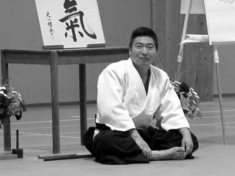

| INICIO | CLASES | TÉCNICAS | VIDEOS | SALUD | SEMINARIO | ORGANIZACIONES | HISTORIA | TEXTOS | BIBLIOGRAFÍA | LINKS |

Textos Recomendados
Yoshigasaki Doshu explica la importancia del Aikido como arte.
El Aikido desarrollado como arte.
Por lo que respecta al Aikido, la única alternativa para su futuro desarrollo será como arte. Las artes como la música, la danza la pintura, el teatro, la escritura, la poesía, etc., se originan en el mundo real pero crean una nueva realidad que no consiste en una copia del mundo real. Esta nueva realidad, plena de belleza y armonía, guía al mundo hacia su transformación en un mundo mejor. Por ello las artes son tan importantes para el ser humano.
El arte del Aikido consiste en desarrollar técnicas bellas y armoniosas que creen una nueva realidad a partir de una situación de peligros reales del mundo real. En el mismo sentido, es un arte de gran ayuda en la vida cotidiana, repleta de distintos peligros, lo cual significa que el Aikido es el arte de vivir.
Texto extraído del libro: Aikido arte del peligro, arte de vida. Autor: Kenjiro Yoshigasaki (Vol I, pag 7/8, Erga Edizioni 2012)